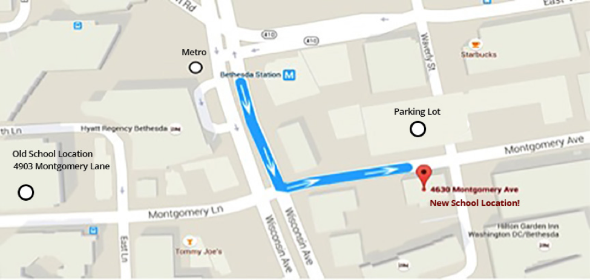
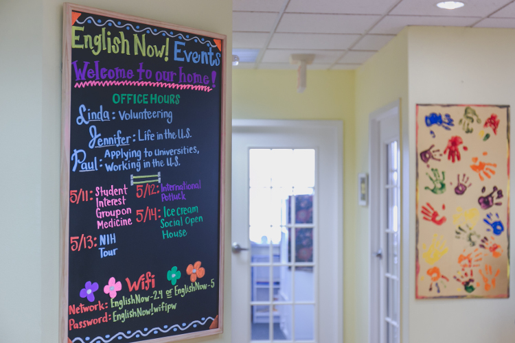
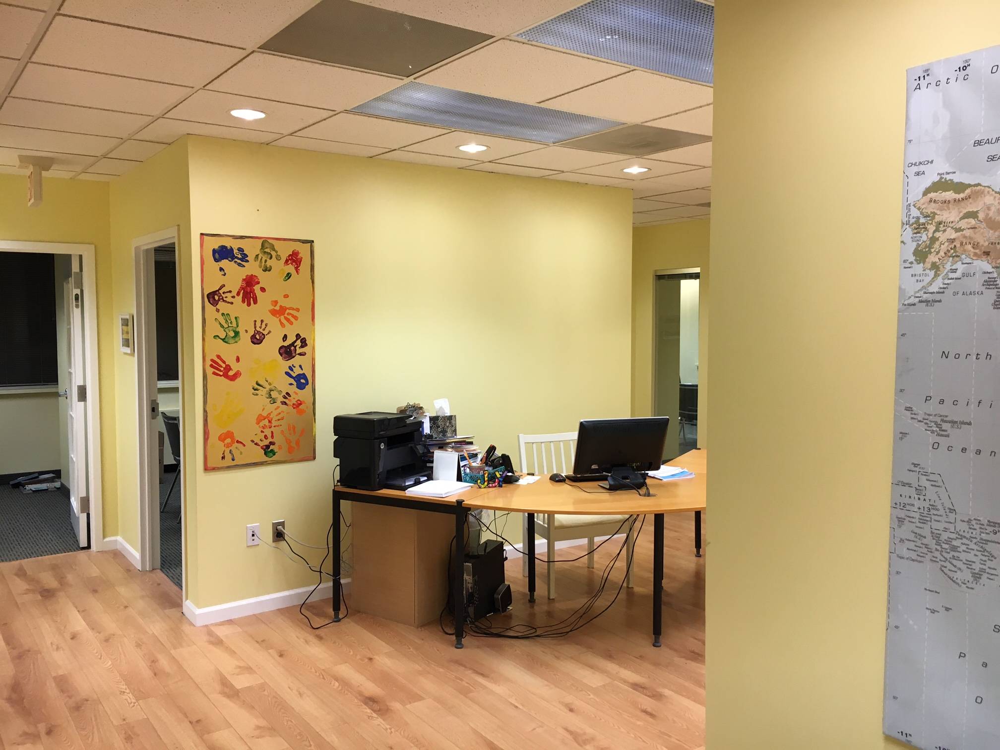
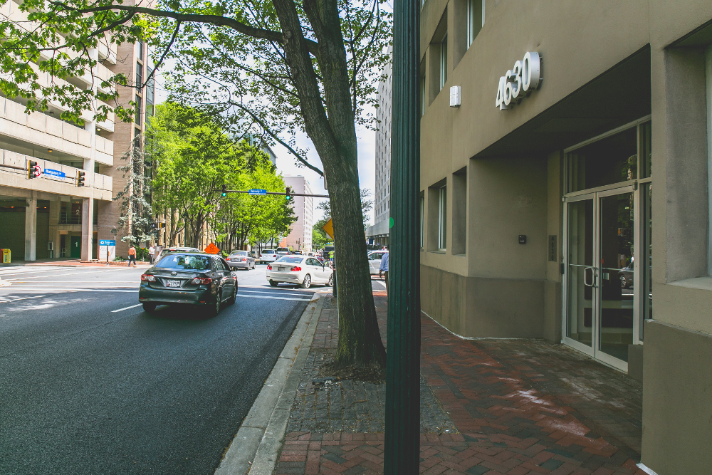

Directions to the School
English Now! is located at 4630 Montgomery Avenue, Suite 300, Bethesda, Maryland 20814. We are a few miles north of Washington, D.C. and are just two blocks from the Bethesda Metro Station on the Metro red line, and buses at the Bethesda Metro Station.
Please see below for directions on how to visit us or download a PDF of this document here.
Walking Directions from the Bethesda Metro Station and Bethesda Metro Station Bus Stop:
- From the Metro, take the long escalator to exit the Metro. Turn right at the top of the escalator. From the bus station, walk straight ahead.
- You will see a sign that says, “Corridor to East Side of Wisconsin Avenue and East-West Highway, via Bethesda Crescent and Shops.” Walk under that sign, into the tunnel. You will see very nice artistic prints and photos in the tunnel!
- Exit the tunnel. Go up the escalator.
- Turn right off the escalator. Walk out the doors onto Wisconsin Avenue. You will see a large Hyatt Hotel across the street. Turn left out of the doors. Walk one block to Montgomery Avenue.
- Cross the street at Montgomery Avenue. Turn left, up Montgomery Avenue.
- We are on the right side of Montgomery Avenue, after the Bethesda Police Station, just before Waverly Street. You will see many police cars parked on the right side of the street, just before our building.
- Go into our building (4630 Montgomery Avenue). Walk up the stairs one floor, to the 3rd floor. Enter the third floor. You will see English Now! You can also take the elevator (press 3) if you would like. (Note that you enter this building on the “second” floor. This is different than in many countries.)

Driving Directions from Wisconsin Avenue: Coming from the south (from Washington D.C.)
- Driving north on Wisconsin Avenue, turn right on Montgomery Avenue after Waverly. You will see a sign with a large, blue “P” “Bethesda Center”, with a right arrow. Turn right. Montgomery Avenue is a one-way street.
- Drive for about 120 meters on Montgomery Avenue. Prepare to turn left.
- Turn left into the Waverly Public Parking Garage (look for the large, blue “P” “Bethesda Center” sign, on the left). Parking is two hours maximum on the bottom floors, unlimited hours above the third floor.
- After you park, take the elevator down and cross Montgomery Avenue to our building. English Now! is located on the right side of Montgomery Avenue, at the corner of Waverly Street, directly across the street from the Waverly Public Parking Garage.
- Go into our building (4630 Montgomery Avenue), and walk up one floor, to the 3rd floor.
- Enter the third floor, and you will see English Now! You can also take the elevator (press 3) if you would like. (Note that you enter this building on the “second” floor. This is different than in many countries.)

Coming from the north
- Driving south on Wisconsin Avenue, turn left on Montgomery Avenue after you pass the Bethesda Metro Station and the Hyatt Hotel, on the right. You will see a sign with a large, blue “P” “Bethesda Center”, with a left arrow. There are left turn lanes. Turn left. Montgomery Avenue is a one-way street.
- Drive for about 120 meters on Montgomery Avenue. Prepare to turn left.
- Turn left into the Waverly Public Parking Garage (look for the large, blue “P” “Bethesda Center” sign, on the left). Parking is two hours maximum on the bottom floors, unlimited hours above the third floor.
- After you park, take the elevator down and cross Montgomery Avenue to our building. English Now! is located on the right side of Montgomery Avenue, at the corner of Waverly Street, directly across the street from the Waverly Public Parking Garage.
- Go into our building (4630 Montgomery Avenue), and walk up one floor, to the 3rd floor. Enter the third floor, and you will see English Now! You can also take the elevator (press 3) if you would like. (Note that you enter this building on the “second” floor. This is different than in many countries.)
Driving Directions from Woodmont/Bethesda Row/Montgomery Lane:
Coming from the west
- Coming from the Woodmont/Bethesda Row area, take Montgomery Lane. Montgomery Lane is a one-way street in this area and becomes Montgomery Avenue when it crosses Wisconsin.
- Cross Wisconsin and drive for about 120 meters and prepare to turn left.
- Turn left into the Waverly Public Parking Garage (look for a large, blue “P” sign, on the left).
- Cross Montgomery Avenue to our building. English Now! is located on the right side of Montgomery Avenue, at the corner of Waverly Street, directly across the street from the Waverly Public Parking Garage.
- Go into our building (4630 Montgomery Avenue), and walk up one floor, to the 3rd floor. Enter the third floor, and you will see English Now! You can also take the elevator (press 3) if you would like. (Note that you enter this building on the “second” floor. This is different than in many countries.)

Parking at English Now!:
The Waverly Public Parking Garage (look for the large, blue “P” “Bethesda Center” sign) is in front of the school at 7400 Waverly Street.
Floors 1-3 are two-hour parking only. Floors 4-6 are for parking over two hours (unlimited parking). There are a few spots on the first level which are one-hour parking only. There are also a few spots on the far end of the garage which are unlimited parking below level four.
Additionally, there are a few spots reserved for Police Only. Please look for signs in front of parking spaces to be sure you are in the right place. If you have an official state-issued handicapped sticker or license plate, you can park for free anywhere in the garage, including handicapped spots.
Walk out of the main entrance and across the street to English Now!
The garage has meters that charge $0.80 per hour on weekdays from 7am-10pm, with free parking on weekends and holidays. You can use coins to pay for parking, call to pay with a credit card, or pay by using a smartphone app called MobileNOW!
In order to pay using your cell phone, call (240) 777-8740 and talk to a garage employee (if you are not an Intermediate level English speaker, this may be difficult). To make payment easier, you may want to download the app called MobileNOW! on your iPhone or Android. You can try this on your own, or please ask us for detailed instructions about downloading and setting up this app. It is somewhat complicated. We would also be happy to help you download this, at the school, when you visit.

Bike Parking:
Biking is a great way to travel around Bethesda. We are near the Capital Crescent Trail, and there is bike parking nearby the school. Coming from the school entrance, the bike parking is across Montgomery Avenue and down Waverly Street about 200 feet. You will go underneath the parking garage as you walk from the bike rack to the school building. The bike rack is next to a Starbucks coffee shop.
Walking Directions from the Old School Location:
Getting to the new location from the old school location is very easy. We are on the same street, about six or seven minutes walk. From the old location, walk down Montgomery Lane away from the Bethesda Library towards Wisconsin Avenue. Cross Wisconsin Avenue. The street becomes Montgomery Avenue after you cross Wisconsin Avenue.
We are on the right side of Montgomery Avenue, after the Bethesda Police Station, just before Waverly Street. You will see many police cars parked on the right side of the street, just before our building.
Go into our building (4630 Montgomery Avenue). Walk up the stairs one floor, to the 3rd floor. Enter the third floor. You will see English Now! You can also take the elevator (press 3) if you would like. (Note that you enter this building on the “second” floor. This is different than in many countries.)
Welcome to English Now! We look forward to seeing you!